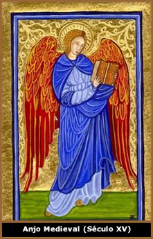

A palavra Anjo (do grego
Angelus e do latim Angelu) de forma geral, significa
mensageiro ou emissário. No entanto,
mais do que o significado puro da palavra, os anjos têm
uma presença imensamente importante na religiosidade de
diversas culturas.
Sob uma análise mais ampla,
anjos são entidades espirituais incumbidas de conduzir
a palavra e a vontade divina entre os seres humanos. São
imortais, dotados de inteligência superior ao intelecto
do homem, possuem vontade e personalidade própria.
No período histórico
que corresponde à Antiguidade, entre civilizações
pré-cristãs, já são encontradas alusões
à seres de origem divina que trazem uma conotação
muito próxima da que atualmente é atribuída
aos anjos. Esta acepção está freqüentemente
associada à diversas religiões, embora seja mais
comum e difundida no cristianismo.
Os anjos estão presentes
dentro de algumas doutrinas esotéricas, sendo possível,
através de rituais específicos, estabelecer um canal
de comunicação com estas criaturas e potencializar
suas influências sobre atividades cotidianas do homem.
No Espiritismo, os anjos são
considerados "espíritos desencarnados" que se
comunicam com o mundo físico. Na astrologia,
os planetas estão associados aos anjos, como por exemplo,
Miguel está relacionado ao Sol, Gabriel
à Lua e Samael ao planeta Marte.
Nas tradições orientais, os anjos são comumente
representados vestindo túnicas esvoaçantes. Entre
os tibetanos há a crença de anjos chamados de Dakas
e anjos do sexo feminino chamadas de Dakinis.
Na
tradição judaico-cristã os anjos foram criados
por Deus para agirem diretamente sobre a terra e conduzir a mensagem
divina. Também assumem um caráter combativo ao portarem
"espadas de fogo" e colocarem-se como guardiões
do Reino do Céu.
Tanto no antigo como no novo Testamento
há diversas citações sobre anjos. Como exemplo,
as passagens de Maria e o Anjo Gabriel e o episódio da
tentação de Cristo
no deserto. No livro de Lucas (Cap. I) o Anjo Gabriel dirige-se
à Maria: "E, entrando o anjo onde ela estava disse:
Salve, agraciada; o Senhor é contigo" e "Disse-lhe
então o anjo: Não temas, Maria; pois achaste graça
diante de Deus".
No episódio da Tentação
de Jesus, (Matheus - Cap. VI - Versículo IV) o demônio
persuade Cristo: "e disse-lhe: Se tu és Filho
de Deus, lança-te daqui abaixo; porque está escrito:
Aos seus anjos dará ordens a teu respeito; e: eles te susterão
nas mãos, para que nunca tropeces em alguma pedra."
Ainda, sob uma abordagem cristã,
mas já combinada com o sincretismo popular, há os
chamados "Anjos da Guarda", que seriam "anjos pessoais"
que cada ser humano teria ao seu lado com a função
de protegê-lo e guiá-lo.
No entanto, anjos não trazem
apenas idéias positivas. Como exemplo, Lúcifer,
em sua origem, também era um anjo que se rebelou contra
a onipotência divina e, por este motivo, foi expulso do
Reino do Céu.
Hierarquia
Angelical
Entre os anjos haveria uma espécie
de hierarquia distinta entre classes e funções.
Sendo assim, são nove ordens compostas por Serafins,
Querubins, Tronos, Dominações, Potências,
Virtudes, Principados, Arcanjos e Anjos, divididas em três
grupos:
Primeira Tríade
Formada por "anjos de existência superior"
que têm íntimo contato com Deus e dedicam-se a adorar
seu criador. Nesta primeira tríade encontram-se os Serafins,
Querubins e Tronos.
Os Serafins (do hebreu queimar
ou consumir) são responsáveis por assistirem
ao trono divino. Os Querubins (do hebraico Chérub,
que pode ser interpretado como plenitude de sabedoria e ciência)
são seres que detêm o conhecimento e atuam como mensageiros
de Deus. Os Tronos são os guardiões do
planeta e têm a missão de auxiliar outros anjos de
ordens inferiores.
Segunda Tríade
Composta por Príncipes da Corte Celestial
que se dividem em Dominações, Potências e
Virtudes. Os anjos da classe Dominações
são responsáveis pela observação do
cumprimento das ordens de Deus por parte de outras classes angelicais.
Atribuem aos outros anjos funções específicas
e atuam como elemento de integração entre os mundos
materiais e espirituais.
Os anjos pertencentes à classe Potência
são responsáveis pela proteção dos
animais e são capazes de operar milagres. Dentro desta
classe há os anjos responsáveis pelo nascimento
e morte humana.
Virtudes é a terceira classe desta
tríade e é responsável pela eliminação
dos obstáculos naturais que interferem no cumprimento da
vontade divina. São portadores e condutores de bênçãos
que se refletem em milagres.
Terceira Tríade
A Terceira Tríade angelical é responsável
pela condução dos caminhos dos homens e das nações.
Este grupo é formado por Principados, Arcanjos e Anjos.
Os Principados são responsáveis pela guarda
dos países e das cidades, reinos e províncias; além
da fauna e flora da Terra.
Os Arcanjos são aqueles que servem
à Deus e aos homens. São responsáveis por
vários aspectos da existência humana, como a sabedoria
e os bons relacionamentos. Os Arcanjos também são
encarregados de enfrentar diretamente as legiões demoníacas.
Os Anjos são os que estão
mais próximos da humanidade e zelam pelo bom desenvolvimento
do homem na Terra. São responsáveis diretos pelo
auxílio dos seres humanos em atividades cotidianas, incluindo
necessidades do plano material. É nesta classe que se encontram
os populares Anjos da Guarda.
Iconografia
Angelical
Apesar de serem representados
artisticamente desde as primeiras civilizações,
a imagem dos anjos tornou-se muito mais freqüente na Idade
Média. Neste período, sob forte influência
da Igreja Católica, os anjos deixaram de ser apenas uma
idéia presente no imaginário popular e um elemento
da religiosidade, para adquirirem cores nas telas e gravuras medievais
e ganharem formas físicas nas esculturas que compõem
as catedrais
góticas.
Nestes casos, geralmente,
o Anjo é representado como uma criança ou um belo
jovem. Em ambas as situações são atribuídas
asas de pássaro e uma auréola sobre a cabeça.
Estes elementos simbolizam valores morais como inocência,
santidade e bondade.
Ainda, na arte
cemiterial, os anjos são freqüentemente encontrados
não apenas como um ornamento funerário, mas principalmente
com um simbolismo próprio que pode representá-los
como um mensageiro de Deus, como aquele que conduz o falecido
ao Reino Divino ou como a ressurreição do espírito,
entre outros.
Entretanto, mais do que as representações
artísticas, os anjos têm um papel fundamental na
psique humana. A crença em seres superiores que acompanham
os homens e os conduzem por toda sua vida funcionando como um
elo entre o divino e o humano, auxilia no desenvolvimento e fortalecimento
da fé, gerando um conforto psicológico e espiritual.
Por
Spectrum
Download
Disponível: